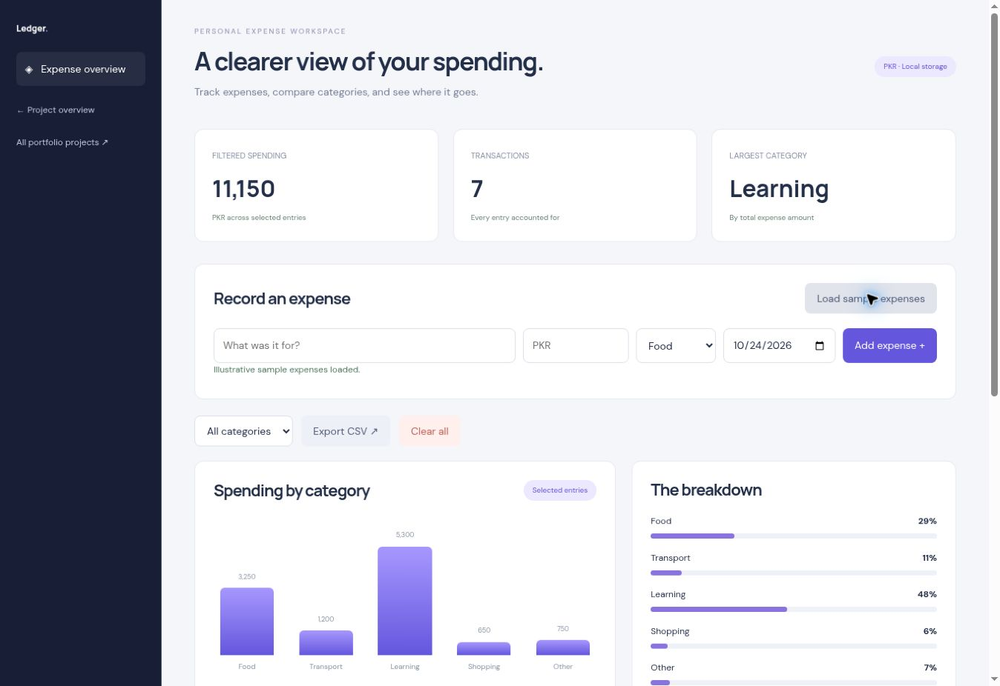

Record
Enter a description, positive amount, date, and spending category.
DATA / PERSONAL FINANCE TOOL
A lightweight expense tracker with category filters, a visual spending breakdown, and CSV export. Designed around quick entries and understandable totals.

Actual application interface, shown with illustrative sample content.
THE IDEA
A list of transactions is useful only when it tells a clear story. Ledger groups everyday expenses and turns the current view into totals and category comparisons.
This application runs directly in the browser with no account required. Its scope is deliberately focused on an everyday workflow visitors can try immediately.
HOW IT WORKS
Enter a description, positive amount, date, and spending category.
Filter the transaction list by category and see the summary update with it.
Compare category totals through a bar chart and percentage breakdown.
Download the filtered records as CSV for use in a spreadsheet.
IMPLEMENTATION
Semantic HTML provides the structure, responsive CSS adapts the layout, and JavaScript handles the application state and interactions. Exports are generated locally in the browser.
Tasks and expenses stay in local storage on the current browser and device. Clearing browser data removes them; exports provide a portable copy. There is no account sync or shared workspace.
A PRACTICAL WALKTHROUGH
Use your own entries or the explicitly labelled sample data.
Add a description, a positive amount in PKR, a date, and a category. Small, consistent entries make the transaction list easier to review later.
Choose a category to narrow the records. Compare the filtered spending total with the category breakdown; the chart describes the entries in the selected view.
Export the filtered records as CSV for a spreadsheet. The application uses local browser storage and does not connect to a bank or move data between devices.
TRY IT YOURSELF